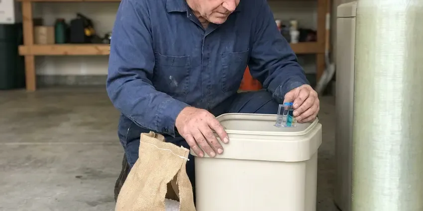
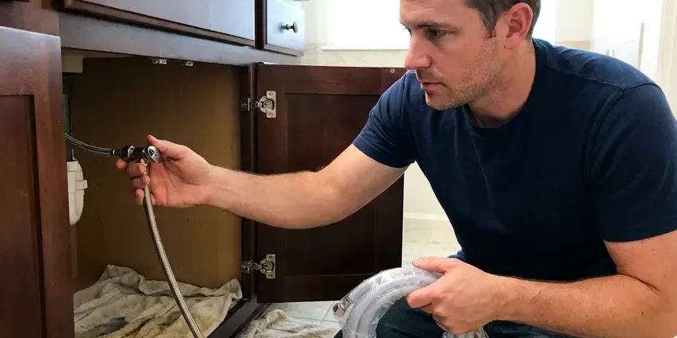
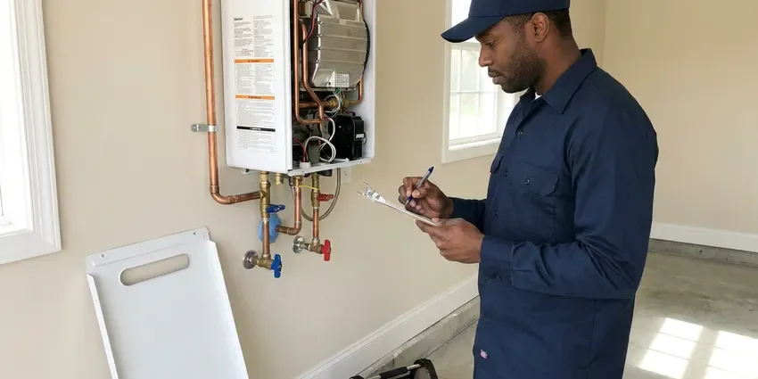
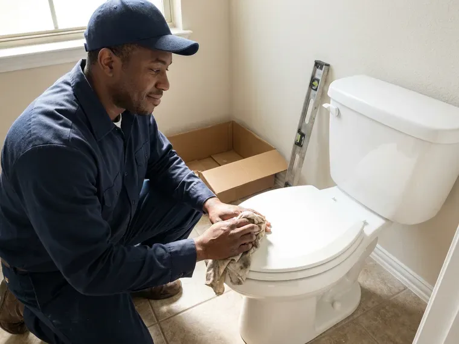
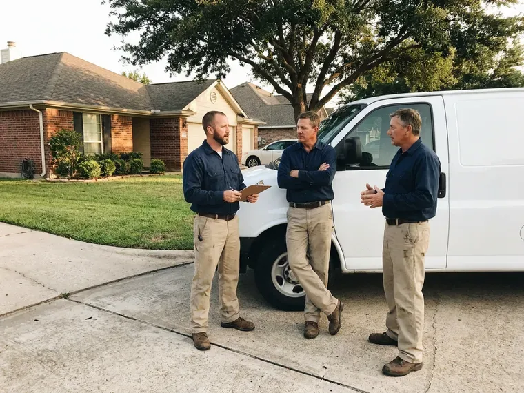
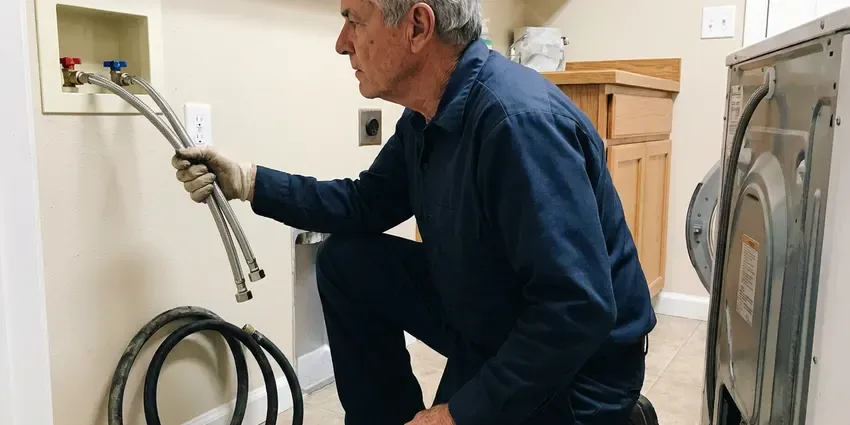
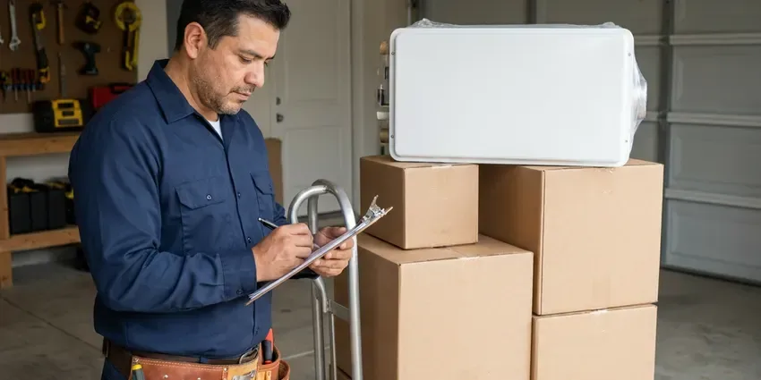
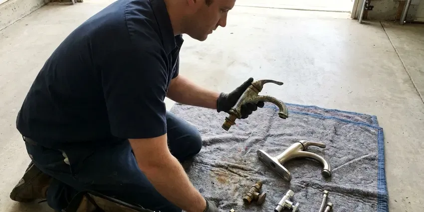
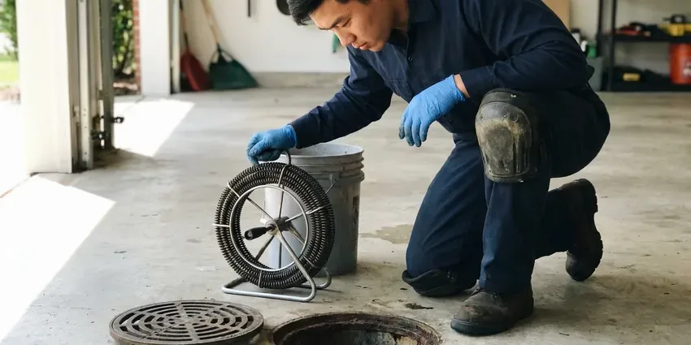
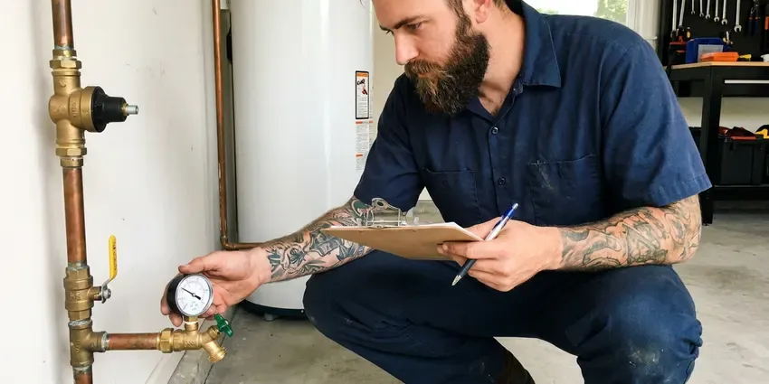

Sewer Repair in Woodbury, MN
Sewage coming up in the tub or a wet patch in the yard? CNV Plumbing cameras the line and fixes the actual break for homes in Woodbury, MN.
- Written Quotes Before Digging
- Spot Repair or Full Replacement
- Trenchless Lining Available
- Licensed Minnesota Plumbing Contractor

Cracked or Rooted Sewer Line in Woodbury, MN?
You see the crack or root mass on screen before a single shovel goes in.
Broken, Rooted and Sagging Sewer Lines in Woodbury, MN
CNV Plumbing handles sewer calls in Woodbury, MN the same way every time. Freeze and thaw movement can shift older sewer laterals, and tree roots often find their way into the joints. We camera the line, locate the problem and show you the footage. Old clay hubs, rusted cast iron and early plastic all fail in different ways, and the fix for a single offset joint is very different from the fix for forty feet of crushed pipe. Most repairs wrap up in a day.
Our expertise includes:
- Cleanout Installation at the Foundation
- Open-Trench Section Replacement
- Belly Re-Grading and Re-Bedding

Additional Plumbing Repair Services in Woodbury, MN
We offer expert plumbing repair services across Woodbury, MN to stop leaks, clear blockages, and keep every fixture working the way it should.


Woodbury water softener repair specialists

Water Leak Repair near Woodbury

Tankless Water Heater Repair in Woodbury

Customers
Why Choose CNV Plumbing for Sewer Repair in Woodbury, MN?
Sewer work is messy and you will be living with it for a day or two. We keep it short. Plywood goes down on the lawn, spoils go on tarps, and the crew lets you know exactly which drains are safe to run during the repair.
- Full Equipment, Camera, locator, jetter and excavation gear ride on every sewer truck.
- Local Code, We work to Minnesota plumbing code with permits and inspections handled for you.
- Warranty, Our workmanship warranty is in writing, and the pipe carries its own maker's warranty.
Citywide Coverage
We repair sewer lines in every part of Woodbury, from older blocks with clay laterals to newer subdivisions with PVC. We carry fittings for both. That means most jobs can start the same day the camera finds the problem, without waiting on a supply house run for a transition coupling.
Experienced Team
Our crew handles the camera work, the dig, the pipe work and the city inspection. One crew does it start to finish. Fewer people on the job means fewer missed details, such as the wrong transition fitting or a skipped bedding layer.
Safety-First Approach
Trenches deeper than five feet get shoring or a trench box, as federal trench safety rules require. Walls collapse fast. Our crew sets the protection before anyone climbs in, keeping dirt piles away from the edge so the trench does not slump.
Trusted Certified Woodbury Plumbing Services Professionals
At CNV Plumbing, we take pride in licensed, certified plumbing services throughout Woodbury, MN. Those papers on the wall mean something. Every repair, install and maintenance visit follows strict safety and quality rules, and the plumbers doing the work carry recognized industry credentials.
Call Us Now PHCC Plumbing Contractor Recognition
PHCC Plumbing Contractor Recognition Better Business Bureau (BBB) Accreditation
Better Business Bureau (BBB) Accreditation Angi Certified Pro
Angi Certified Pro ISO 9001 Quality Management Certification
ISO 9001 Quality Management CertificationSewer Repair Options for Woodbury, MN Homes
Pipe Burst and Collapse Repair in Woodbury, MN
A collapsed sewer pipe stops all flow at the point of failure. The whole house loses its drains. Collapses usually come from corroded cast iron, crushed clay under a driveway or tar-paper pipe that has finally flattened, and the camera tells us exactly where the pipe gave way and how deep it sits. We dig at the mark and replace the broken length with PVC. Lining cannot fix a full collapse.

Traditional Sewer Line Replacement in Woodbury
Some lines are too far gone for a liner. A fully collapsed section is one example. When the camera shows a collapse, a large offset or a belly deep enough to hold several inches of water, we open a trench, remove the old pipe and lay new Schedule 40 PVC on proper bedding at a quarter inch of fall per foot. We see this most in older neighborhoods with clay pipe. We stage the work so you lose sewer service for a few hours, not days.
Sewer Line Leak Detection & Repair in Woodbury, MN
Sewer smell outside the house points to a leak. A lush stripe over the line is another clue. We confirm it on camera, look for cracks, open joints or a broken cleanout riser, and mark the location so the repair stays small. A small crack can sometimes be fixed with a short sectional liner, so nothing in the yard gets disturbed. Larger breaks get cut out and replaced.
Video Camera Sewer Inspection in Woodbury
A self-leveling camera goes in at the cleanout or through a pulled toilet. We record the whole run. Cracks, root intrusion, offset joints and standing water all show up on the screen, and the sonde in the camera head lets us mark the exact spot and depth on the ground above, so any excavation stays small and targeted. Older homes in Woodbury often hide two or three problems in one line, and the video catches all of them.
Root Intrusion Removal in Woodbury, MN
Roots enter through hairline cracks and loose joints, then grow into a mat that catches paper and grease. They come back fast. We clear the line with a root cutting head or a jetter with a chain flail, camera it afterward to see the condition of each joint, and show you whether a liner or a spot repair would stop the cycle for good. Mature trees in Woodbury yards make this a common call.
Root Intrusion Repair in Woodbury, MN
Cutting roots treats the symptom. The joint is the real problem. After clearing the line, we look at each rooted joint on camera and decide between a short sectional liner, a full liner or cutting in new pipe, depending on how many joints are affected and how far apart they sit. One or two joints is a small job. Ten or twelve usually justifies lining the run.
Sewer Line Hydro-Jetting in Woodbury
A hydro-jetter pushes water at several thousand psi through a nozzle that scours the full inside of the pipe. A cable only punches a hole. That makes jetting the better choice for grease, scale and fine root growth, and it is the standard prep step before any pipe lining job. Brittle or broken pipe is a different story. We check the pipe on video before we jet it.

Cracked and Broken Pipe Repair in Woodbury
Clay and cast iron crack from settling soil, tree roots and vehicles parked over the line. The crack lets soil in and sewage out. We excavate at the marked spot, cut out the damaged length and install new Schedule 40 PVC with shielded stainless couplings rated for the transition between materials, then test the repair with water and video before closing the hole. Figure on a single day for a typical spot repair.
Sewer Repair Near Me in Woodbury, MN
A sewer line problem in Woodbury gets worse with every load of laundry. Do not wait on it. We book camera inspections across the Woodbury area, mark the problem on the surface, and hand you a written quote before the shovel comes out.
Searching for sewer repair near me in Woodbury, MN usually means something is already backing up. We can often be there the same day. Our trucks carry the camera, locator and repair fittings, so the first visit usually ends with a diagnosis and a written price instead of a second appointment.
CNV Plumbing at a Glance
- Licensed and insured plumbers serving Woodbury, MN
- Same-day appointments and 24/7 emergency response
- Clear written estimates, no hidden fees
- 4.8-star rated by 501+ Minnesota customers
Woodbury Map
Woodbury Information
- Population
- 79,538
- Area codes
- 612/507/320
- Service area
- Woodbury and communities within 40 miles
- Nearby
- St. Paul, Eagan, Minneapolis, Apple Valley
Older homes in Woodbury, MN often have clay or cast iron joints that separate with age and let roots in. Freeze and thaw movement can shift older sewer laterals, and tree roots often find their way into the joints.
Talk to a Plumber
Reach out to CNV Plumbing for reliable plumbing work done by licensed pros in Woodbury, MN.
Our Specialized Plumbing Services in Woodbury, MN
At CNV Plumbing, you get every kind of plumbing service from one company across Woodbury, MN. We go from leak detection all the way to full system installations, for homes and commercial buildings, and we do it quickly at a fair price. Here are the core services we offer:

Professional plumbing repair, Woodbury

Woodbury plumbing installation specialists

Local plumbing replacement by CNV Plumbing, Woodbury

Drain Services in Woodbury

Professional plumbing maintenance, Woodbury
Camera, Dig, Test in Woodbury, MN
What to expect from the first phone call to the last shovel of backfill.
Book the Visit
Call (612) 712-9569 and describe the backups, odors or slow drains. We usually get out within a day.
Inspect the Line
We camera the lateral from the cleanout and locate every defect. You watch the footage with us.
Pick the Repair
We lay out spot repair, lining or replacement with prices. The decision is yours.
Frequently Asked Questions About Sewer Repair in Woodbury
Clearing a clog can be as little as $300. Broken pipe is another matter. Replacing a long run with trenchless methods can run $6,000 or higher, with the total set by footage, access, material and how much digging is involved. We price it once the footage is in.
For a spot repair, you lose the sewer for a few hours. Replacements take longer. On a full replacement we stage the work so the house is reconnected each evening where possible, and we tell you which fixtures are safe to use while the line is open. Moving out is rarely necessary.
Standard policies usually exclude the pipe itself. Wear and roots are not covered. They may cover water damage inside the house that resulted from the backup, and a few carriers offer an add-on that covers the line from the house to the street. Check your policy for that rider. We give you video and a written report for the claim.
Usually not. Locating keeps the dig small. Most problems can be fixed through a single pit at the marked spot or with trenchless methods through one or two small holes, with plywood under the equipment and the soil compacted back in place. We can quote surface restoration separately.
Schedule 40 PVC is our standard for open trench work. PVC will not corrode. For pipe bursting we use fused HDPE, which comes in continuous lengths with no joints for roots to find, and for lining we use epoxy liners rated for decades of service inside the old pipe. Local code decides the final choice.
One slow sink is usually a local clog. Several slow drains are not. If the toilet bubbles when the tub drains, or the lowest drain in the house backs up whenever someone runs water upstairs, you are looking at a problem in the main line downstream of every branch. That calls for a camera.
Flush only toilet paper. Flushable wipes are not. Keep grease out of the kitchen sink, and if your house has mature trees near the line or older clay or cast iron pipe, schedule a camera inspection every year or two so small defects get caught before they turn into a backup. Rooted lines benefit from yearly cleaning.
Trenchless repair fixes the pipe through one or two small access pits. No long trench. Pipe bursting pulls a new HDPE pipe through the old one while splitting the old pipe apart, and cured-in-place lining inserts a resin-soaked tube that hardens into a new pipe wall inside the old one, which leaves concrete and landscaping alone. We check on camera whether yours does.
What Our Customers Say About Our Plumbing Experts
Laura S.
Our 40 gallon tank started leaking from the bottom after thirteen years. The tech hauled the old one out, set a new unit with a fresh expansion tank, and had hot water running in about four hours. He took the old tank with him too.
Water Heater Replacement · Apple Valley, MNPaul B.
Our pit pump ran nonstop even in dry weather. The plumber found the check valve was stuck open, so the same water kept cycling back into the pit. New valve, new float switch, done in an hour. It runs quiet now.
Sump Pump · St. Paul, MNJames P.
Our restaurant had a slow leak at the hand sink that was rotting the cabinet base. CNV Plumbing came in at six in the morning before prep, replaced the trap and both supply lines, and was packed up before my first cook clocked in.
Commercial Plumbing · Burnsville, MNLisa C.
Water was pouring out from under the washing machine on a holiday weekend. CNV Plumbing talked me through closing the valves over the phone and had a plumber at the house within ninety minutes. It was a burst fill hose.
Emergency Plumbing · Burnsville, MNJessica T.
We were adding a gas range in a kitchen remodel and needed a new line run from the meter. The plumber pulled the permit, ran the pipe through the crawl space, and had it inspected and approved within the week.
Gas Line Repair · Minneapolis, MNMonica A.
Our water bill nearly doubled in one month with no change in how we used water. The tech checked the meter, heard the leak under the hallway with his equipment, and opened a hole about a foot square. Fixed the same day.
Slab Leak Repair · Bloomington, MN